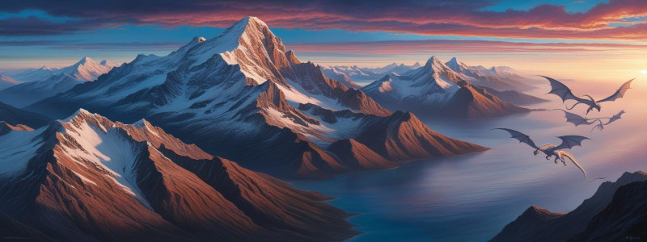

Quem somos?
Nosso grupo, intitulado Hakkeshu, foi formado em meados de 2024. Nos reunimos através do Discorde jagamos sempre aos Domingos (ou quase). A campanha atual é chamada Coração de Rubi.
Hakkeshu
Dizem que grandes grupos se formam em batalhas, profecias ou contratos de sangue. Mas não este.
Este começou com copos vazios, feridas abertas e uma noite em que todos, de formas diferentes, haviam desistido do mundo.
A Taberna do Ganso Louco, na fronteira de Zakharov com as Terras Selvagens, era o tipo de lugar onde heróis iam para esquecer que não eram heróis. E foi lá que cinco figuras — cada uma carregando um mundo de dores — se encontraram. Não por destino, mas por desespero.
Lumin sentou-se primeiro. Seus braços vermelhos, pulsantes como carne viva, afastaram até os bêbados mais corajosos. Ninguém queria dividir mesa com o “monstro”. Ela já estava acostumada. Desde que fugira das arenas onde era forçada a lutar como escrava, nunca mais encontrou um lugar que a aceitasse — muito menos um grupo. Usavam-na. Depois temiam-na. Por fim, a expulsavam.
Naquela noite, ela não queria companhia. Só esquecimento.
Mantos chegou em silêncio. Um paladino coberto de aço, marcado pelos símbolos da Deusa da Morte. Seus olhos não piscavam, seu rosto não sorria. Pedia vinho para brindar aos mortos e sussurrava orações entre os goles. Tinha perdido tantos, enterrado tantos, que já não sabia mais onde terminava sua fé e começava sua vontade — ou se ainda havia vontade alguma.
Sentou-se ao lado de Lumin sem sequer olhar para ela. E ela não o afastou.
On Myo Ji, o mago, entrou logo depois. Com roupas simples e olhos atentos, parecia deslocado — como um viajante que errou o caminho e caiu num mundo que não compreendia. Criado por um mestre tamuriano que o salvara das ruas, Myo partiu para “ver o mundo com os próprios olhos”. Mas o mundo era feio. E naquela noite, ele aprendera isso da forma mais dura.
Sentou-se à mesma mesa, pedindo saquê. — Se não me expulsarem, eu fico — disse.
Lumin deu de ombros. Mantos brindou aos mortos.
Ikaros já estava na taberna. Ninguém notou sua presença até que ele começou a rir. Não por alegria — mas pela ironia de tudo. Um homem sem memória, sem passado, sem nome, além de um que escolhera ao acaso. Tentava reencontrar sentido em garrafas e confusões. Mas naquela mesa estranha, viu algo diferente: ninguém ali sabia o que fazer com o que era.
Levantou o copo.— Não sei quem sou, mas sei que prefiro estar aqui.
E ninguém o mandou embora.
Por fim, (nome), o último a chegar. Um andarilho de olhos frios e arco nas costas. Observou a mesa com cuidado. Estranhos. Assustadores Quebrados. E talvez, por isso mesmo, confiáveis.
Sentou-se em silêncio. Pediu a bebida mais forte.
Naquela noite, ninguém falou de heróis. Falaram de dor, de fracasso, de raiva.
Cada um, em algum momento, disse: — Não aguento mais este mundo.
E foi então que, entre um gole e outro, surgiu a pergunta: — E se a gente mudasse ele?
Não como salvadores. Não como santos. Mas como um grupo de almas quebradas que, juntas, talvez... só talvez... pudessem fazer alguma diferença. Ou, ao menos, não se sentirem tão sozinhas.
Saíram da taberna ao amanhecer, sem ouro, sem glória, sem um plano. Mas com um nome rabiscado na madeira de uma mesa quebrada: “Filhos do Silêncio”.
E naquele primeiro passo torto, sujo e bêbado... Começou a história que ninguém esperava que desse certo.
E, mesmo assim, deu.
Tormenta20
Tormenta20 é uma versão atualizada e revisada do RPG brasileiro Tormenta, um dos mais famosos jogos de interpretação de papéis(RPG) no Brasil. Lançado oficialmente em 2020, Tormenta20 traz um sistema de regras compatível com o Dungeons & Dragons 5° Edição (D&D 5E), mas com características próprias que refletem o cenário único de Tormenta
O RPG se passa no mundo de Arton, um cenário de alta fantasia repleto de magia, monstros, intrigas políticas e aventuras épicas. O universo é vasto e contém diversas culturas, raças, reinos e divindades, com uma história rica e complexa que vai desde batalhas épicas até mistérios e conspirações
A versão de Tormenta20 foi criada para proporcionar uma experiência de jogo mais acessível e fluida, mantendo a profundidade que os fãs de longa data do universo esperam. Algumas características importantes dessa edição incluem

By: Charles Corrêa
Objetivo atual:
As Montanhas Uivantes
As Montanhas Uivantes permanecem geladas durante o ano todo. Por muito tempo, estudiosos tentaram encontrar explicações para esse fenômeno, tecendo as mais variadas teorias. Uma delas diz que as montanhas são mantidas nessa temperatura por um gigantesco demônio de gelo adormecido, que está se preparando para despertar e invadir as aldeias da região. Outras envolvem complicadas explicações sobre correntes de ar, frentes frias, constituição geológica das montanhas, etc. A verdade tem ligação com os Dragões-Reis. Beluhga, a Rainha dos Dragões Brancos (também chamados dragões do gelo), foi presa na cordilheira por Khalmyr. Tamanho era o poder de Beluhga que sua presença prolongada afetou o clima local, resultando nas Montanhas Uivantes que conhecemos. Beluhga era adorada como deusa por bárbaros e esquimos que suportam o terrível clima. No entanto, foi morta pelo Paladino. As Uivantes continuam geladas, e ainda não há um novo regente ou Dragão-Rei branco
By: Canva IA
Proxímos passos
As Montanhas Sanguinárias
Todo o leste de Arton é margeado por uma cordilheira montanhosa, a maior conhecida no mundo. Como uma muralha titânica, ela separa o continente e o oceano. Além de um obstáculo geográfico em si mesmas, essas montanhas também colocam outro perigo para aqueles que tentam cruza-lás: são habitadas por todo tipo de dragões, monstros e criaturas fantásticas. Por isso são chamadas Montanhas Sanguinárias
By: Canva IA